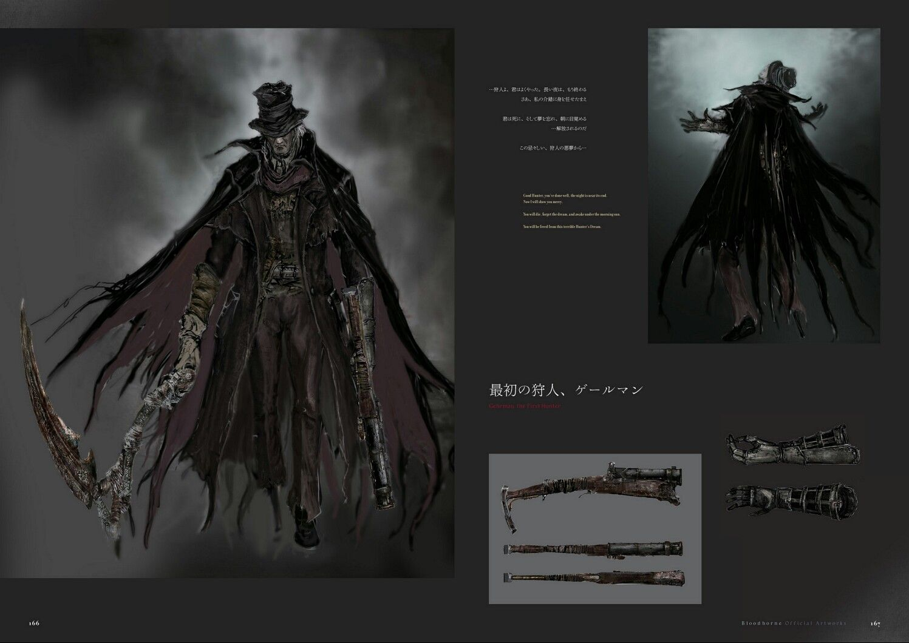

Derrota a Gherman el primero cazador!!!
El primer Cazador, creador de la base de todas las Armas con Truco del grupo. Un Grande lo mantiene atado, contra su voluntad, al Sueño del Cazador.
DERROTALO!!
Fase 1 - combate
Gehrman es un enemigo extremadamente imponente. La Hoja de Entierro, su espada curva/guadaña, es muy peligrosa. Además, cuenta con una pistola muy potente y un trabuco que te puede hacer pedazos si te despistas. Sin embargo, tiene un punto débil: a fin de cuentas, es humano y se mueve como tú. Por tanto, te resultará bastante fácil prever cuándo puedes disparar para hacer un parry y seguir con un ataque visceral. La espada curva se puede esquivar si ruedas hacia su izquierda, te podrás colocar tras él, golpear una o dos veces (depende de la velocidad de tu arma) y entonces apartarte para evitar el contraataque. Cuando pase a usar la guadaña a dos manos, la cosa es aún más fácil. Acércate, espera a que mueva la guadaña, muévete atrás y no alcanzará a golpearte, pero aún así dará un segundo golpe. Tras él, si esperas un instante, puedes acercarte y golpear antes de que vuelva a la carga. También en la forma de guadaña, cuando veas que carga el ataque fuerte puedes disparar y, aunque quede mucho para su golpe, quedará desequilibrado y será vulnerable a un ataque visceral. No obstante, debes tener mucho cuidado cuando salte al aire. Va a hacer un ataque que cubre un amplio radio frente a él, que sólo podrás esquivar, en la mayoría de casos, si te colocas justo bajo él. Su otro ataque, con un potencial altísimamente letal lo hace cuando se para y empieza a cargar energía y a brillar ligeramente. Huye tan lejos como puedas porque cubre bastante área y aún teniendo la vida al máximo, puede matarte en un decir jesús.
Fase 2 - menos del 50% de vida
Ten cuidado cuando, al quitarle la mitad de la vida, se vuelva mucho más rápido. Sigue siendo posible usar la pistola para romper sus ataques y usar un visceral, pero ahora será algo más complicado si no te andas con ojo.
Recompensas
Ecos de sangre: 128.000 (no conseguirás ecos si pasas al combate contra la Presencia Lunar)
Insignia de Viejo Cazador